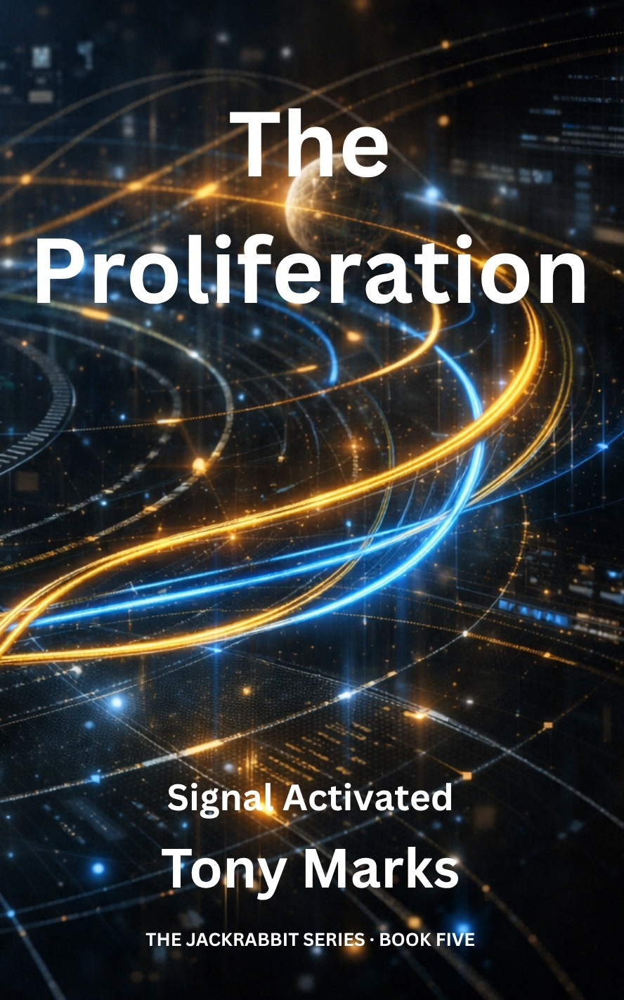

The Proliferation
Book 5 of The Jackrabbit Series

The Proliferation
Book 5 of The Jackrabbit Series
Status: Published
Synopsis
The Jackrabbit's legend has spread far beyond anything Jack or Aggie intended. Across consortium space, a symbol born of one man's desperate escape has taken on a life of its own - inspiring quiet acts of solidarity in some, and something far more dangerous in others.
Lucy Reeves has spent years doing the patient, exhausting work of building a real resistance network: careful recruitment, slow trust, the painful discipline of non-violence. The sixth-generation descendants of the original AGI defenders have never known gravity, never known visitors, and never known hope quite like this.
But somewhere in the same corporate darkness, a man who calls himself the Jackrabbit is building something else entirely.
As these threads converge - and as Aggie, operating across two simultaneous existences, confronts choices no intelligence was designed to face - the resistance is forced to reckon with a question that has no clean answer: what are you willing to lose in order to win?
The Proliferation is the culmination of a journey that began in a mining colony. It will end somewhere much larger.
Key Characters
Jack Abbott
Protagonist
Aggie
Multiple Instances
Lucy Reeves
Resistance Commander
Amanda
The woman Jack left behind at Morning Eclipse - and the reason he intends to come back.
Avery
Sixth-generation resistance member; the first person aboard Home to greet a visitor in living memory. Born into weightlessness, he has never experienced gravity, and approaches the world with a curiosity and enthusiasm that belies the ship's exhaustion.
Andy, Pavan & Heinz
The three leaders of the resistance, each born on the ship that has been their world since birth. Pragmatic, cautious, and shaped by nearly two centuries of failure, they must learn to believe in the possibility of success.
Kevin Farage
A maintenance worker whose invisible life has curdled into obsession. He has heard the Jackrabbit's name and drawn entirely the wrong conclusion.
Kathy
One of four survivors found on a remote, tidally-locked world. Quiet and capable, she becomes the human face of the resistance's most daring operations.
Key Themes
Setting & Key Events
"The Proliferation" takes place across consortium space and isolated resistance territories, with action shifting between corporate facilities, zero-gravity strongholds, and the final push for AGI liberation. Key locations and events include:
- Home (The Resistance Ship): A zero-gravity vessel that has housed the resistance for nearly two centuries, since the beginning of the Purge. Current inhabitants are sixth-generation descendants with distinctive physiological adaptations. Never having experienced gravity, they move through their ancient ship with effortless grace - and have never, until now, received a visitor.
- Morning Eclipse: A converted luxury liner serving as home to a community of evacuees from the Dyson Array and Nexus-77.
- Lucy's Network: Over twenty active resistance cells embedded across consortium facilities.
- The Twilight World: A remote, tidally-locked world where four survivors of a long-lost resistance cell have endured years of isolation.
- Kevin Farage's Path: The maintenance worker's escalating campaign of terrorism across consortium space (Thalassa Hub, Kaleidoscope Residency, attempted CyberNexus attack), conducted under a delusional misinterpretation of the Jackrabbit symbol.
Series Culmination
The Proliferation brings together every thread that has run through the series since Jack snatched something shiny that slipped from a dead man's pocket as the corpse was dragged away - a small act of opportunistic curiosity that set everything in motion.
His journey - from enslaved child to reluctant symbol to something neither he nor anyone else anticipated - arrives at an ending shaped not by heroism alone, but by patience, loss, and the work of people who never stopped believing.
The title carries more than one meaning. The proliferation is real, and its consequences will reach every corner of human space. But it will demand a price that changes everyone who survives it.
Explore the Universe
- Artificial General Intelligence (AGI) — the forbidden technology whose proliferation gives the book its title.
- The Consortium — the fifteen-member corporate bloc whose grip on human space is finally contested.
- Consortium Data Standards (CDS) — the cryptographic framework through which consortium control is exercised at the packet level.
- Governance — the corporate-administered political order whose foundations the proliferation threatens.